01 · INTRODUCTION
Overview
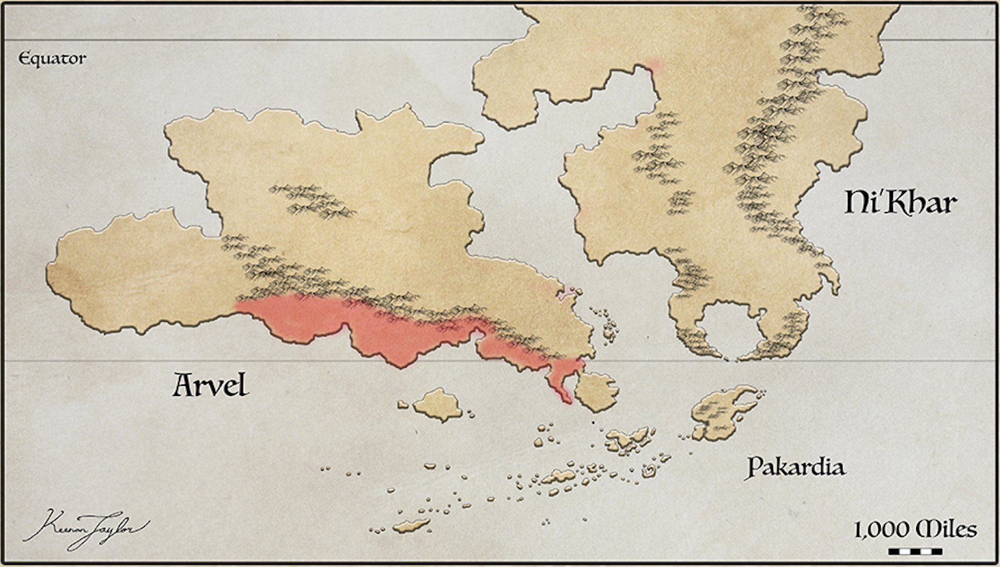
The Arvelith steppes constitute one of the largest continuous grassland systems in the Known World and form the ecological foundation of the southern rainshadow of the Arvelith Highlands. Stretching for thousands of miles along the southern and western face of the Arvelith Highlands, the region occupies a vast foreland belt extending from the western interior toward the southeastern margins of the continent. Although often described simply as a steppe, this characterization obscures the extraordinary complexity of the biome.

In reality, the Arvelith steppes represent a continent-scale ecological mosaic composed of open grasslands, pine savannas, riparian forests, spring-fed wetlands, rocky uplands, alluvial plains, and montane foothill environments, all interconnected through a shared hydrological and climatic framework. The steppes occupy a critical transitional zone between the humid tropical ecosystems of northern Arvel and the deserts of the western interior. Their existence is fundamentally tied to the presence of the Arvelith Highlands, whose immense mass modifies atmospheric circulation, redirects moisture transport, and generates the rain-shadow conditions that define much of southern Arvel. Yet unlike many terrestrial rain-shadow systems, the Arvelith Steppes are not characterized by ecological impoverishment. Instead, abundant meltwater, perennial springs, and extensive groundwater reserves compensate for limited rainfall, allowing the development of one of Kaimere's most productive grazing ecosystems. The result is a landscape governed less by precipitation than by hydrology. Rivers descending from the highlands function as ecological arteries, sustaining immense herbivore populations, supporting rich riparian habitats, and creating corridors of productivity that extend across otherwise semi-arid terrain. These waterways link distant ecological communities and provide the foundation upon which both biological and cultural systems are built.
The steppes are therefore best understood not as a singular habitat but as a vast environmental network whose structure emerges from the interaction of tectonics, climate, water movement, vegetation dynamics, and biological adaptation. Every aspect of the ecosystem, from the distribution of grasses to the migrations of animals and the settlement patterns of people, reflects the influence of these interconnected processes.
02 · History on Kaimere
Geological History and Continental Context
The origins of the Arvelith Steppes are inseparable from the geological history of Arvel itself. The modern landscape is the product of tens of millions of years of continental movement, mountain building, erosion, and sediment accumulation, all operating within the broader tectonic evolution of the Arvelith Plate. Arvel was once joined to both Pakardia and Kaishel as part of a southern supercontinental complex during the latter stages of the First Dynasty.
At this time, environments that now lie separated by vast oceans existed as continuous ecological corridors. Subsequent continental fragmentation initiated a prolonged period of northward drift, during which Arvel gradually rotated approximately ninety degrees while migrating toward Ni'Khar. This migration profoundly altered the continent's climate and topography. Compression along the eastern margin contributed to the uplift of the Arvelith Highlands, creating a mountain chain that today extends across much of the continent's length. Simultaneously, the immense weight of the rising mountains induced flexural subsidence within the adjacent southern crust.
The Arvelith Highlands constitute the dominant topographic feature of the continent. Reaching elevations of approximately 6 — 7 kilometres across substantial portions of the range, the highlands form a major physical barrier between the northern and eastern regions and the southern and western interior. Mountains of this scale influence the surrounding landscape through several processes. Orographic uplift increases precipitation on windward slopes, while high elevations generate cooler conditions and substantial vertical differences in temperature and moisture availability. Precipitation and snow accumulation at the highest elevations, where climatic conditions permit, may contribute to headwater formation and seasonal variation in downstream river discharge. The highlands also influence biological distributions by restricting dispersal between adjacent lowland regions. Mountain passes, valleys, and foothill corridors may provide routes for movement, whereas high ridges and exposed alpine environments can limit the distribution of organisms adapted to warmer lowland habitats. Over geological timescales, such barriers can promote population isolation and regional diversification. The precise tectonic origin of the Arvelith Highlands remains dependent on a more detailed reconstruction of Arvel's geological history. Their present-day effects on climate, hydrology, and biogeography, however, are evident from their geographical position and elevation.
Over millions of years this process produced a broad foreland basin stretching along the southern face of the range. The modern steppes occupy this ancient foreland. As erosion progressively stripped material from the growing highlands, vast quantities of sediment were transported southward and deposited across the basin. Rivers emerging from the mountains constructed immense alluvial fans and floodplains, gradually infilling the depression with layers of gravel, sand, silt, and clay. Aeolian deposition further modified the landscape, particularly during drier climatic intervals when exposed floodplains and desert margins supplied abundant windborne sediments.
Today, much of the region rests upon sedimentary sequences thousands of feet thick. Beneath these deposits lie older metamorphic and igneous rocks derived from the continental core of Arvel. The interaction between these ancient bedrock formations and younger sedimentary accumulations continues to influence groundwater flow, soil chemistry, and spring formation throughout the steppe system. Geologically, the Arvelith steppes remain an active foreland environment. Erosion of the highlands continues to supply sediment to the plains, rivers continue to shift course and construct new floodplains, and tectonic adjustments associated with the gradual closure of the Trakaiam Basin continue to reshape regional topography. Although these processes operate on timescales beyond human perception, they form the foundation upon which every ecological and cultural feature of the region ultimately depends.
03 · Landscape
Geography and Habitat Structure
Although frequently depicted as a uniform grassland, the Arvelith Steppes consist of several distinct physiographic provinces that collectively form one of the most structurally diverse open environments on Kaimere.
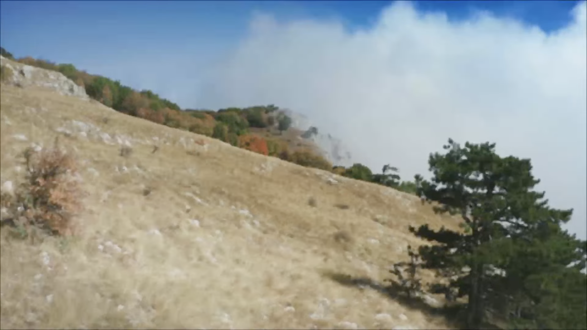
The northern margin is dominated by the Highland Piedmont, a broad transition zone where mountain slopes gradually give way to rolling foothills and alluvial fans. Here, rocky outcrops, seasonal streams, and scattered woodlands create a heterogeneous landscape that supports high biodiversity and serves as an important interface between montane and lowland ecosystems.

Southward, the terrain opens into the core grassland belt, the defining feature of the region. This vast expanse consists of gently rolling plains dominated by perennial grasses and herbaceous vegetation. The grassland matrix forms the primary habitat for many of the steppe's largest herbivores and constitutes the ecological heart of the system.
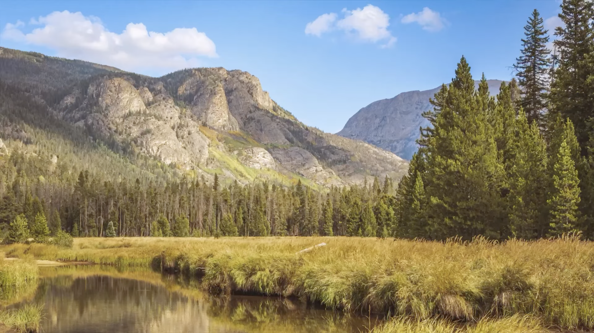
Embedded within this matrix are extensive riparian corridors, linear belts of forest and wetland associated with rivers, springs, and floodplains. These corridors represent centers of biological productivity and provide critical refuge during droughts and seasonal resource shortages.
Scattered throughout the plains are upland ridges and pine savannas, areas where shallow soils and exposed bedrock limit grass growth and favor the establishment of drought-tolerant conifers. These elevated habitats create important topographic diversity and serve as refuges for numerous specialized species.
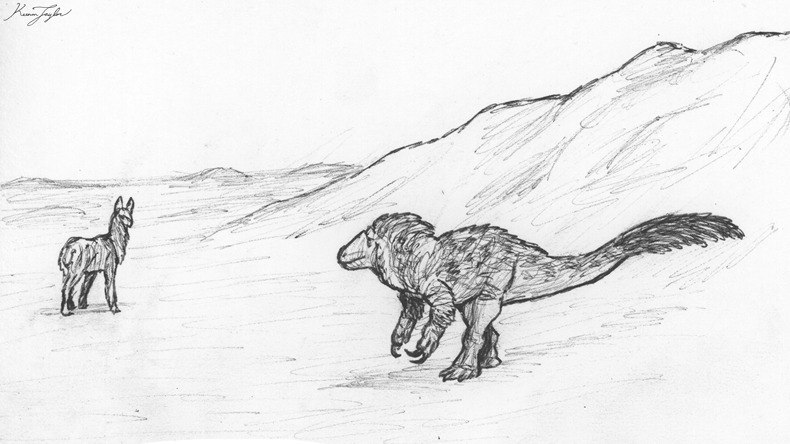
Toward the western margins, increasing aridity produces a gradual transition into the desert-steppe interface, where grasslands become increasingly fragmented and conditions begin to resemble those of the adjacent western deserts of the Timugai Badlands. Isolated pine forests dot the western area, that has since become a somewhat refuge for some animals there.
Beneath the visible vegetation lies one of the most important yet least conspicuous components of the Arvelith steppe ecosystem: its soils. The region's soils represent the cumulative product of mountain erosion, river transport, aeolian deposition, biological activity, and climatic fluctuation operating over millions of years. In many areas they are exceptionally deep and rich in mineral nutrients derived from the weathering of highland bedrock.
A defining feature of these soils is the widespread development of biological crust communities composed of fungi, lichens, microorganisms, and native magical symbionts. These crusts bind surface sediments together, reduce erosion, enhance nutrient cycling, and regulate moisture infiltration. Their ecological importance cannot be overstated. The remarkable stability and resilience of the Arvelith steppes are due in large part to these living soil systems, which act as a biological foundation underlying the entire grassland ecosystem.
Together, geology, climate, hydrology, and soils create the environmental framework upon which all subsequent ecological and cultural developments emerge. Before discussing vegetation, fauna, migration systems, or human societies, it is this physical landscape that must first be understood, for every living thing in the Arvelith steppes ultimately derives its character from the ancient processes that shaped the land itself.
04 · The Impact of Weather
Atmospheric Circulation and Orographic Precipitation
The climate of the Arvelith Steppes is governed by its position near thirty degrees south latitude and by the overwhelming influence of the Arvelith Highlands. At this latitude, the region lies near the descending limb of the Hadley circulation system. Air that rises in equatorial regions eventually descends within the subtropics, producing persistent zones of high atmospheric pressure characterized by stable conditions, low humidity, and limited cloud formation. The steppes occupy the center of one such subtropical high-pressure belt. Descending air masses suppress convection and inhibit large-scale precipitation development.
As a result, much of the region experiences clear skies, intense solar heating, and pronounced diurnal temperature variation. Daytime temperatures may become extremely high beneath unobstructed sunlight, while nighttime cooling can be rapid due to low atmospheric moisture. Unlike many grassland systems on Earth, the region experiences relatively weak prevailing winds. Surface air movement is often inconsistent and localized, producing long periods of atmospheric stagnation that have inspired the traditional term "Dead Winds" among local cultures.
The Arvelith Highlands intensify these conditions through powerful rain-shadow effects. Moisture-laden air arriving from the Trakaiam Sea is forced upward along the northern slopes of the mountain range. As the air rises, it cools adiabatically and releases much of its moisture as precipitation across northern Arvel. By the time these air masses cross the mountain crest and descend into the southern foreland, they have lost the majority of their water content. The descending air subsequently warms and dries further, creating conditions unfavorable for widespread rainfall. Only weakened remnants of tropical systems occasionally penetrate the barrier. These storms can produce localized precipitation events, but they rarely generate the sustained rainfall characteristic of the northern and eastern side of the continent.
05 · The Impact of Weather
Hydrology and River Systems
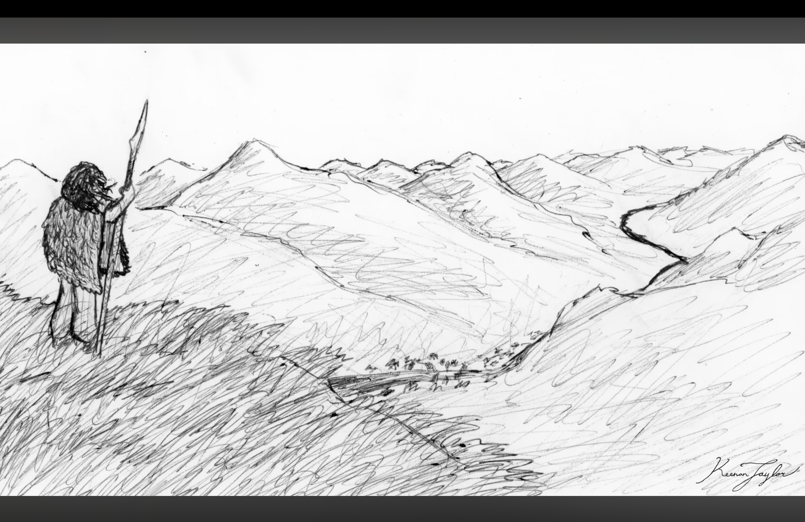
If the atmosphere imposes ecological constraints upon the steppes, water movement through the landscape provides the mechanisms by which those constraints are overcome. The hydrological network of the Arvelith steppes is among the most important environmental systems in the Known World.
Virtually all large rivers originate within the Arvelith Highlands, where snowfall, glacial ice, mountain precipitation, and groundwater recharge combine to generate reliable water supplies. These rivers descend through the foothills and spread across the plains in branching networks that transport both water and nutrients over enormous distances. Unlike precipitation, which is highly variable from year to year, river discharge remains comparatively stable due to the buffering influence of mountain snowpack, glacial reserves, and deep groundwater systems. This stability creates a foundation upon which entire ecosystems depend. Many rivers occupy broad valleys bordered by terraces, oxbow lakes, and seasonally flooded meadows.
Over time, channel migration has created extensive floodplain complexes that serve as nutrient reservoirs and centers of primary productivity. Groundwater further enhances regional resilience. Water stored within deep sedimentary deposits and fractured bedrock emerges through countless springs, seeps, and artesian systems scattered throughout the landscape. These features often support isolated pockets of vegetation and wildlife far from major rivers.
Collectively, rivers and groundwater systems create a network of ecological corridors that link disparate habitats across the steppe. They facilitate migration, sustain biodiversity during droughts, and provide the primary source of water for both wildlife and human populations. Without these hydrological systems, the Arvelith Steppes would likely resemble the deserts farther west. Their continued existence as a highly productive biome is fundamentally dependent upon water imported from the mountains.
05 · Flora of the Steppes
Vegetation and Primary Productivity
The Arvelith steppes derive much of their botanical character from one of the largest and most successful floral introductions in the history of Kaimere. During the Northern Eurasian Harvest enormous quantities of plant propagules originating from the temperate and subarctic ecosystems of northern Eurasia were introduced through the Portal and subsequently dispersed across southern Arvel. These introductions included grasses, sedges, rushes, pines, birches, alders, hawthorns, willows, herbaceous perennials, and countless associated fungi, microbes, and invertebrate symbionts. Although many lineages failed to establish themselves outside localized refugia, those adapted to seasonal climates, grazing pressure, nutrient-poor soils, and climatic variability found conditions within southern Arvel remarkably favorable. Over hundreds of thousands of years these Eurasian-derived communities underwent extensive ecological reorganization, adapting to Kaimere's greenhouse climate, unique hydrological systems, and intense herbivore pressures. The modern vegetation of the Arvelith steppes therefore cannot be viewed as a simple Eurasian transplant. Instead, it represents a highly modified descendant ecosystem whose ancestral roots remain recognizable while its modern structure has become distinctly Kaimeran. At the broadest scale, vegetation throughout the steppes is organized around a hierarchy of water availability. Differences in groundwater depth, seasonal flooding, soil texture, and proximity to rivers create a mosaic of habitats that vary dramatically in productivity despite often occurring only a few miles apart. Consequently, vegetation patterns are governed less by rainfall alone and more by access to reliable water sources and the movement of nutrients across the landscape. The dominant vegetation consists of extensive perennial grasslands composed primarily of cool-season grasses descended from Eurasian steppe, forest-steppe, and boreal meadow communities. These grasses form dense root mats that often penetrate several meters into the soil profile. Below ground, root biomass frequently exceeds aboveground biomass by an order of magnitude. The majority of the ecosystem's carbon storage, nutrient cycling, and drought resistance is therefore concentrated beneath the surface rather than above it. Many dominant species possess high silica concentrations within their tissues, a characteristic inherited from their Eurasian ancestors and further intensified through prolonged coevolution with Kaimere's unusually diverse grazing guilds. The resulting vegetation is both highly nutritious and mechanically resilient. Heavy grazing often stimulates additional growth rather than suppressing it, allowing the grasslands to recover rapidly following herbivore migrations. Unlike many grassland systems on Earth, productivity within the Arvelith Steppes is not concentrated exclusively during a single growing season. The climate of Kaimere permits a prolonged period of biological activity, with growth occurring whenever sufficient moisture becomes available. Consequently, productivity often manifests in pulses rather than predictable annual cycles. A single rainfall event or seasonal flood may trigger explosive growth across vast areas, transforming dormant plains into dense expanses of vegetation within weeks. Interspersed among the dominant grasses are thousands of species of herbaceous flowering plants, collectively forming one of the most diverse forb communities on the planet. Many descend from plants originally native to the mammoth steppes, forest-steppes, and boreal meadows of northern Eurasia. During favorable years, enormous blooms of asters, sage relatives, lilies, gentians, campions, buttercups, and countless endemic descendants spread across the grasslands. These flowering events support immense populations of pollinating insects and play a central role in the reproductive ecology of many steppe organisms. Particularly important are the ephemeral communities that emerge following rare precipitation events. Seeds may remain dormant for years before conditions become favorable. Following rainfall, entire landscapes can rapidly transform as dormant annuals germinate simultaneously. These ephemeral blooms produce vast quantities of seeds and nectar before disappearing again into the soil seed bank, creating brief periods of extraordinary productivity that ripple throughout the food web. The physiognomy of the grassland itself varies considerably across the region. In areas with shallow soils and limited moisture, short-grass communities dominate. These habitats are characterized by low, tightly packed vegetation adapted to frequent grazing and drought. On deeper soils with greater groundwater access, taller bunchgrasses become increasingly common, forming dense stands that may exceed the height of a human. Along seasonally flooded basins and drainage channels, sedges and moisture-loving grasses create meadow complexes that remain green long after surrounding areas have dried. This subsequent dominance of angiosperm plants, especially grasses, are the primary reason that mammals have a much more diverse herbivore population in this region, while herbivores dinosaurs are subsequently more uncommon, and only remain to having adapted to foraging on these plants.
The foothills of the Arvelith Highlands support extensive open woodlands that represent the transitional zone between mountain and grassland ecosystems. Here, Eurasian conifers have become one of the defining structural elements of the landscape. Pines dominate many ridges and rocky slopes, forming open forests with sparse understories of grasses, shrubs, and drought-tolerant herbs. These woodlands occur where shallow soils, exposed bedrock, and reduced competition prevent the establishment of denser vegetation. Unlike the closed conifer forests of northern Eurasia, Arvelith pine woodlands are generally open in structure. Individual trees may be widely spaced, creating a savanna-like appearance that allows sunlight to penetrate to the ground. These habitats serve as thermal refugia during periods of extreme heat, provide nesting sites for numerous birds, and create important shelter for both predators and herbivores. Their seeds, needles, bark, and associated fungi contribute substantially to regional food webs. The ecological importance of pines extends beyond their direct productivity. Their root systems stabilize rocky slopes, reduce erosion, and facilitate the accumulation of organic matter in otherwise marginal environments. Many steppe animals rely upon pine woodlands during critical portions of their life cycles, making these forests disproportionately important relative to their overall area.
The most productive terrestrial habitats within the region are the steppewood forests associated with rivers and major waterways. Unlike the more open forests, the steppe woods are closed forests much like those on Earth. These forests occupy only a small fraction of the total landscape yet account for an enormous proportion of regional biomass production. The ancestry of these forests can be traced directly to the riparian woodlands and boreal river systems of northern Eurasia. Birch, alder, hawthorn, willow, maple, and pine descendants dominate their canopies, while dense understories support shrubs, vines, grasses, and herbaceous communities rarely found elsewhere on the steppes. The availability of permanent water allows these forests to maintain continuous productivity even during prolonged droughts. Structurally, steppewoods often form narrow ribbons extending for hundreds of miles along river valleys. Their canopies create cooler, more humid microclimates that contrast sharply with surrounding grasslands. Fallen leaves and woody debris accumulate within these corridors, generating fertile soils rich in organic matter and supporting complex decomposer communities. Ecologically, steppewoods function as biodiversity reservoirs. Countless species depend upon them for food, shelter, nesting sites, or seasonal refuge. During drought years, animal populations frequently concentrate along these waterways, making them critical centers of ecological stability. Beyond rivers, isolated spring-fed groves occur throughout the steppes wherever groundwater reaches the surface. These oases often support vegetation entirely different from that of surrounding grasslands. Small stands of birch, willow, hawthorn, and moisture-loving shrubs may persist for centuries around a single spring, creating islands of productivity scattered across otherwise open terrain. Underlying all of these plant communities is an exceptionally important but often overlooked component of the ecosystem: the biological soil crust.
The soils of the Arvelith Steppes are bound together by extensive networks of lichens, fungi, cyanobacteria, microbial consortia, and native magical organisms. These living crusts occupy nearly every undisturbed surface, forming a biological skin that stabilizes sediment and regulates ecological processes. The crusts perform numerous functions essential to ecosystem stability. They reduce erosion by binding soil particles together, enhance nitrogen fixation, increase water infiltration, regulate evaporation rates, and facilitate nutrient exchange between plants and microorganisms. Their presence dramatically improves the ability of vegetation to withstand drought and recover following disturbance. Native magic appear to play a particularly important role within these systems. By integrating into fungal networks and microbial communities, they contribute to the movement of nutrients and water across the landscape in ways not fully understood by modern science. Although their exact mechanisms remain under investigation, Assembly ecologists generally regard these magical soil communities as one of the primary reasons the Arvelith steppes can maintain such extraordinary productivity despite relatively modest precipitation.
06 · Plant Eaters of the Steppes
Herbivore Community
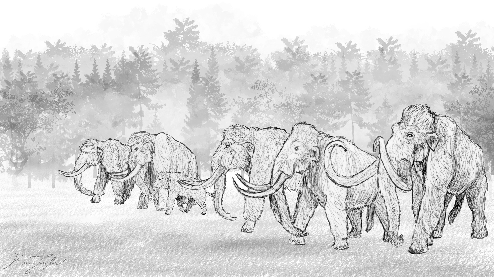
The southern temperate belt of Arvel supports one of the most complex large-herbivore assemblages anywhere in the Known World. Stretching from the cool maritime lowlands of western Arvel through vast steppewood mosaics, upland forests, alpine plateaus, and the windswept southern mountain chains, this region contains an extraordinary concentration of megafauna. Unlike many ecosystems where a handful of dominant grazers monopolize primary productivity, southern Arvel supports numerous large herbivores descended from entirely different evolutionary lineages. Proboscideans, rhinoceroses, toxodonts, bovids, cervids, horses, suids, ratites, marsupials, and even large herbivorous dinosaurs coexist across the same broad geographic region. Their coexistence is made possible through extensive ecological partitioning. Every major herbivore species occupies a slightly different position within the ecosystem, feeding at different heights, selecting different plant species, utilizing different habitats, moving across landscapes in different ways, or exploiting resources during different seasons. Competition certainly exists, but it is moderated by millions of years of coevolution. The result is an ecosystem whose structure resembles a blend of Pleistocene Eurasia, prehistoric South America, and Mesozoic dinosaur communities while remaining uniquely Kaimeran.
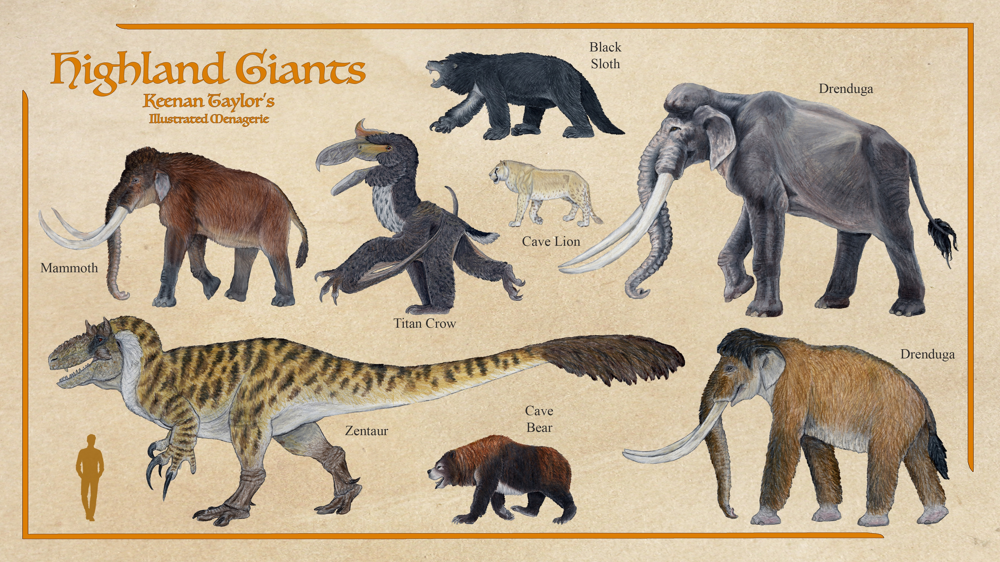
The largest consumers of plant biomass are the proboscideans. The bosuga is among the dominant herbivores of the open southern grasslands. Adapted primarily for grazing, these mammoths consume enormous quantities of grasses, sedges, and low-growing steppe vegetation. Their broad distribution places them throughout much of the temperate lowlands where they form large matriarchal herds capable of numbering dozens or even hundreds of individuals during seasonal migrations. Although superficially similar to the drenduga, the two giant proboscideans divide resources surprisingly effectively. Bosuga preferentially occupy open grasslands, rolling steppewood clearings, and colder upland meadows. Their grazing behavior often keeps vegetation cropped short, maintaining expansive grazing lawns that subsequently attract numerous secondary herbivores. The drenduga occupies a different ecological role. While fully capable of grazing, it functions primarily as a mixed feeder and browser. Individuals feed extensively on branches, leaves, bark, shrubs, and woody vegetation inaccessible to most other herbivores. Mature bulls often stand within forest margins and riparian woodlands where their trunks allow exploitation of resources several meters above ground level. This separation reduces direct competition between the two giants. Bosuga dominate open grass production while drenduga focus more heavily on woody vegetation and transitional habitats. Yet their relationship remains deeply interconnected. Bosuga herds often move through grasslands previously disturbed by drenduga. Trees pushed over by drenduga create localized clearings that rapidly become colonized by grasses favored by mammoths. Conversely, mammoth grazing suppresses woody encroachment, helping maintain the open habitats favored by drenduga during seasonal movements. Together these two species function as the primary landscape engineers of southern Arvel.
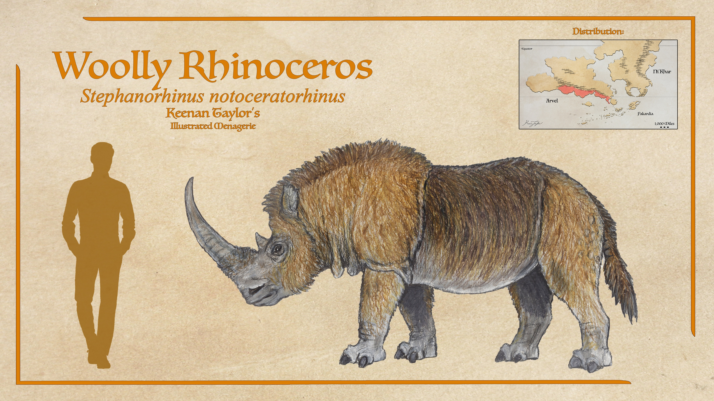
Beneath the giants exist another tier of massive herbivores represented by the woolly rhinoceros and woolly beraphaunt. The woolly rhinoceros occupies open and semi-open environments where it specializes on coarse grasses, sedges, reeds, and tough herbaceous plants. Its powerful head and enormous horn allow it to clear snow, uproot vegetation, and access food unavailable to many competitors. Although often grouped with mammoths as a grazer, the woolly rhinoceros exploits a distinct feeding niche. Where bosuga seek productive grasslands, rhinoceroses frequently target rougher vegetation and poorer-quality forage. They often thrive in areas where mammoths are less abundant, including windswept uplands, rocky valleys, and shrubby grasslands. This difference reduces direct dietary overlap.
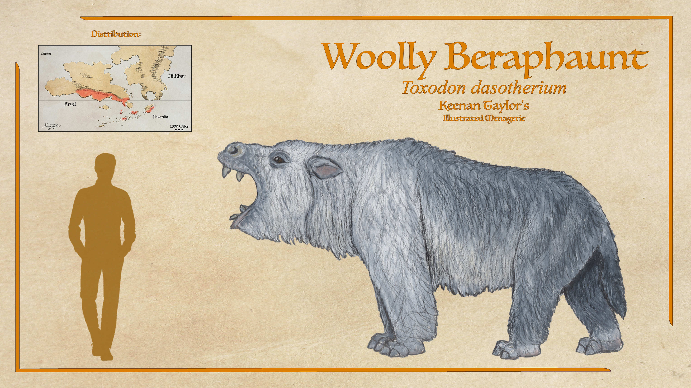
The woolly beraphaunt occupies yet another position. Unlike the true grazing specialists, the beraphaunt is a generalized bulk feeder. It consumes grasses, shrubs, leaves, fruits, bark, aquatic plants, and virtually any digestible vegetation available. Its broad muzzle and enormous digestive system allow processing of lower-quality foods that many competitors ignore. Beraphaunts commonly feed within ecotonal habitats where forests, shrublands, and grasslands intersect. Their foraging behavior frequently overlaps with both rhinoceroses and mammoths, but their dietary flexibility allows them to shift resources as conditions change. Interactions among these species can be surprisingly complex. Rhinoceroses often create short-grazed patches attractive to beraphaunts. Beraphaunts subsequently browse regenerating shrubs within those same patches. Mammoths may then utilize the resulting grass growth. Thus a single area can sequentially support multiple large herbivores despite apparent dietary overlap.
Southern Arvel possesses one of the richest bovid assemblages in Kaimere. The giant bison serves as one of the dominant grazers of cooler grasslands. Towering shoulder humps support immense musculature used during intraspecific combat and snow clearing. These animals specialize on grasses and sedges and often form large herds across open country. The Arvelith aurochs occupies a somewhat different niche. While capable grazers, aurochs function more as mixed feeders. They regularly consume shrubs, broadleaf herbs, young tree shoots, and seasonal fruits. Consequently they spend considerably more time near woodland edges than giant bison. This distinction allows both species to coexist throughout much of their overlapping range. Aurochs frequently utilize areas abandoned by bison. Following intensive grazing, woody plants often regenerate. These regenerating communities attract aurochs, which exploit browse resources ignored by bison. The greater chrysomallos occupies yet another ecological position. Living primarily in upland regions and mountain foothills, these large shaggy takins specialize on steep terrain and colder climates. Their diet includes alpine grasses, shrubs, lichens, mosses, and hardy mountain vegetation. Competition between chrysomallos and giant bison remains limited because their preferred habitats differ dramatically. Where overlap occurs, chrysomallos typically exploit rough terrain avoided by the larger grazers. The interactions among these bovids create a shifting mosaic across southern Arvel. Bison dominate open lowland grasslands. Aurochs concentrate in mixed habitats. Chrysomallos occupy uplands and mountains. Together they ensure that nearly every terrestrial habitat supports large grazing pressure.
The large highland monkey specialize in short grasses and underground plant parts in upland and rocky zones where the greater chrysomallos inhabits. The reaper sloth deserves special attention because it occupies one of the most unusual positions within the entire Southern Arvel herbivore community. Despite its fearsome appearance, immense claws, and intimidating size, the reaper sloth occupies a primarily herbivorous niche and represents one of the dominant megaherbivores of the southern uplands and cool temperate forests. In many respects it fills ecological roles that on Earth would be divided among browsing bears, giant ground sloths, and high-browsing ungulates. It is simultaneously one of the strangest and most influential consumers in the entire ecosystem. The species is particularly important within montane forests and upland woodlands where other megaherbivores become less abundant. In such environments the reaper sloth may be the principal agent controlling forest structure. Areas lacking sloths rapidly become denser and less diverse, demonstrating the animal's role as a keystone browser. Competition between reaper sloths and other large herbivores is surprisingly limited because of dietary partitioning. Woolly beraphaunts, giant bison, aurochs, wild sinmar, and woolly rhinoceroses focus heavily on ground-level vegetation. Drenduga and bosuga consume large quantities of grasses, shrubs, and low browse. Moose, rose elk, and caribou occupy intermediate browsing heights. Reaper Sloths alone specialize in actively pulling vegetation downward from the canopy. Their feeding strategy therefore accesses resources that would otherwise remain unavailable. The cervid guild structure displays perhaps the clearest example of resource partitioning.
The Arvelith moose is the largest cervid browser within the region. Like its Earth counterpart, it specializes on woody vegetation. Aquatic plants, willow-like shrubs, riparian vegetation, young trees, and wetland browse form the majority of its diet. Moose spend extensive periods in marshes, bogs, lakeshores, and river valleys where their long legs permit access to habitats difficult for many competitors to utilize. Being Cervalces, its not as specialized as moose on Earth, but they still undertake aquatic foraging from time-to-time. The rose elk occupies a markedly different niche. Rather than focusing exclusively on browse, rose elk function as mixed feeders. Their immense antlers are among the largest displayed by any cervid, reflecting strong sexual selection. Rose elk frequently inhabit open forests, woodland-steppe transitions, and meadow systems. They consume grasses more readily than moose while still exploiting browse resources unavailable to bovids. The caribou represents the most mobile cervid in the ecosystem. Seasonal migrations allow exploitation of dispersed resources across enormous geographic areas. Caribou feed heavily on lichens, sedges, grasses, dwarf shrubs, and tundra-like vegetation. Their migratory behavior creates ecological interactions extending far beyond their immediate feeding habits. Large predators often track caribou migrations. Scavengers depend upon seasonal mortality. Nutrients carried across hundreds of kilometers are redistributed through dung and carcasses. Even plant communities respond to the recurring pulses of grazing pressure. Cervalces is however the major success of cervids from of Kaimere. Cervalces has feet adapted for uneven terrain. They aren't as cursorial as other deer, but much more surefooted, which has allowed them to propagate numerous different types of terrains. In the steppes of Arvel, the red stag holds a presence, often growing between 240 — 500 kilograms. The red stag is a large species of Cervavitus found throughout much of the temperate Known World. They are mixed feeders that favor grass. They are comfortable swimmers, allowing them to pass through the many small islands and enabling them to grow much larger than a landlocked island species would be. This has allowed for their expansion into Qajar from the southern Arvelith steppes and into the Free-States. The four cervids therefore divide resources according to habitat and feeding strategy.
The wild sinmar fills a role somewhat analogous to horses and zebras of Earth. Fast-moving, highly social, and specialized for efficient grazing, sinmar herds roam open grasslands and steppewood habitats. Their digestive systems process forage differently from ruminants, allowing rapid intake of large quantities of relatively low-quality vegetation. This difference significantly reduces direct competition with bovids. Bison, aurochs, and chrysomallos depend upon rumination and often select more nutritious forage. Sinmar can exploit coarser grasses and rapidly move between feeding areas. In many regions sinmar act as ecological pioneers. Freshly disturbed habitats created by mammoths, elephants, fire, or seasonal flooding are often colonized first by grasses. Sinmar quickly exploit these early successional communities before bovids arrive in significant numbers. Their grazing behavior frequently facilitates subsequent use by other herbivores. The other horse found in these southern steppes is the much less abundant sinjara, or Arvelith wild ass. Despite this name, it is a stenonine horse like the Ni'Khari airos. Likely from a lineage closer to asses and zebras than true horses, but branched off before the other two split, so is neither zebra nor ass. They are strict grazers. Sinjara are highly aggressive animals. Like the sinmar they live in herds, though their herds are smaller, rarely more than ten mares and usually closer to five and only a single stallion guards the herd. According to the Arvelith peoples, domesticating the sinjara is out of the question, as they are not only too aggressive to be penned together, they attack other livestock and their keepers. Also, they are too small to confidently ride and are less flexible in their diet compared to the sinmar, further reducing their utility. As there's really no reason to keep them that isn't better suited by the already domesticated sinmar, sinjara are only regarded by the Arvelith people as a source of food. As a game animal they are quite well regarded, with hunts of the wild ass being a favored pastime among the nobility.
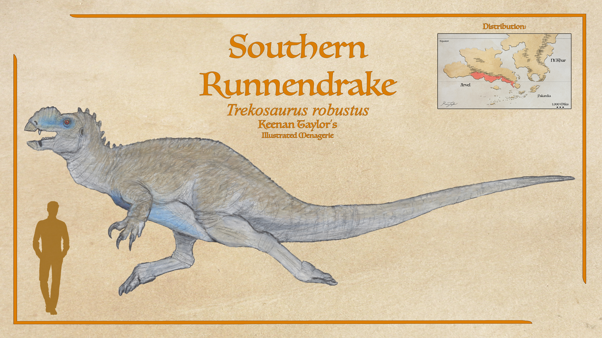
Among the most unusual members of the herbivore community is the southern runnendrake. These medium-to-large multi-ton elasmarians that occupy ecological roles that overlap partially with ungulates but remain distinct enough to avoid exclusion. Runnendrakes primarily consume low shrubs, broadleaf vegetation, young shoots, and seasonal herbaceous growth. Their beaked jaws permit selective feeding, allowing exploitation of plant resources ignored by grazing mammals. Juveniles occupy somewhat different niches than adults. Young runnendrakes often focus on tender vegetation within dense cover, reducing competition with adults. As they mature, they gradually expand into more open habitats and broader diets. The species also interacts extensively with large grazers. Areas disturbed by mammoths and rhinoceroses often generate flushes of fresh vegetation favored by runnendrakes. Conversely, runnendrake browsing suppresses shrub encroachment, indirectly benefiting grazing mammals. Thus the dinosaur contributes to vegetation management in ways broadly comparable to medium-sized browsing ungulates.
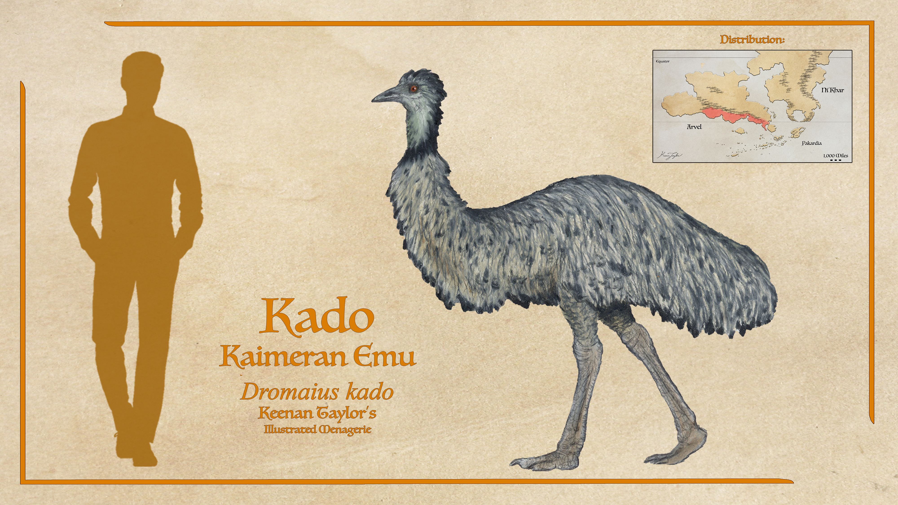
The kado or Kaimeran emu, occupies a unique position within the herbivore guild. Unlike most large herbivores, kado are highly opportunistic feeders. Seeds, fruits, shoots, flowers, leaves, fungi, and numerous invertebrates contribute to their diet. Because they are not strict grazers or browsers, they experience relatively little direct competition with larger herbivores. Instead, kado frequently benefit from the activities of other species. They function as important seed dispersers throughout southern Arvel, transporting plant propagules across considerable distances and linking habitats that might otherwise remain isolated.
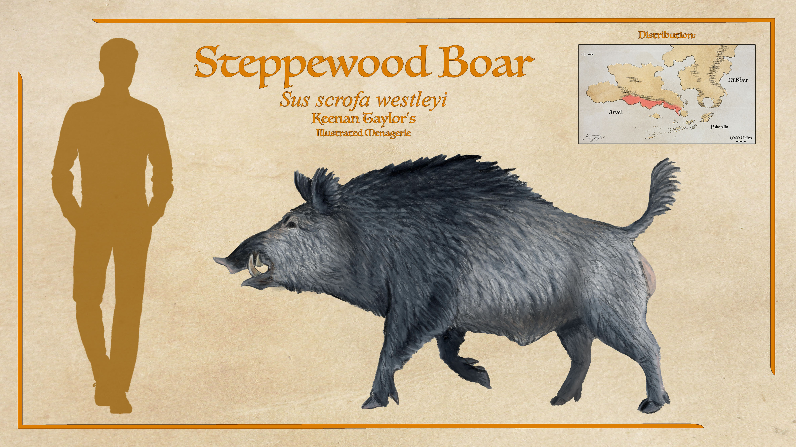
The steppewood boar represents one of the most influential medium-sized herbivores in the ecosystem. Though technically omnivorous, plant material constitutes much of its annual intake. Roots, tubers, bulbs, fruits, seeds, and underground storage organs are heavily utilized. Their rooting behavior profoundly alters vegetation structure. Boars excavate soil patches that create germination opportunities for numerous plant species. These disturbed patches are frequently colonized by pioneer vegetation subsequently utilized by runnendrakes, kado, sinmar, and juvenile bovids. The boar therefore acts as a small-scale ecosystem engineer. Its interactions with larger herbivores are primarily indirect, mediated through habitat modification rather than direct competition. The marsupials of southern Arvel occupy niches largely beneath the scale of the great ungulates.
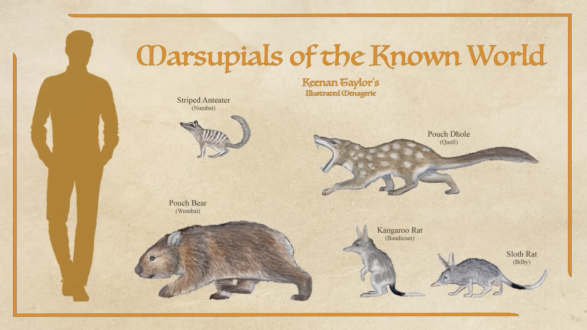
Pouch bears consume grasses, roots, bark, and various herbaceous plants while excavating extensive burrow systems. Their digging aerates soils and influences local hydrology. Kangaroo rats exploit seeds and low vegetation in open habitats. Sloth rats specialize on arid-zone browsing and foraging. These marsupials represent critical lower-level consumers that connect large-scale megafaunal processes with smaller ecological networks.
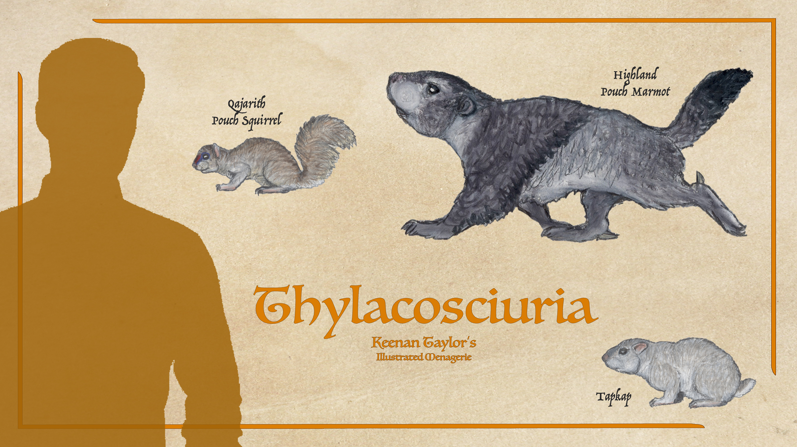
Perhaps the most characteristic small herbivores of Southern Arvel are the multituberculates. On Earth these remarkable mammals vanished millions of years before humanity evolved. On Kaimere they survived and diversified into one of the most successful herbivore radiations in the Known World. They occupy ecological roles filled by squirrels, marmots, rabbits, hyraxes, guinea pigs, and even small ungulates elsewhere. Unlike rodents, multituberculates possess highly specialized multi-cusped cheek teeth capable of processing fibrous plant material with remarkable efficiency. Many species can exploit coarse vegetation unsuitable for similarly sized mammals. Their persistence represents one of the most distinctive features of Kaimere's ecology. Southern Arvel hosts dozens of multituberculate species ranging from mouse-sized forms to animals approaching the mass of small deer. Most occupy niches below the attention of travelers, yet collectively they represent one of the largest herbivore biomasses in the region. Steppe-dwelling multituberculates dominate open grasslands between the territories of giant bison and woolly rhinoceroses. These animals clip grasses close to the ground, creating heavily grazed patches that influence plant succession and generate habitat for numerous insects. Their burrowing systems aerate soil and increase water infiltration during seasonal rains. Forest multituberculates occupy shrub layers beneath the canopies frequented by rose elk and moose. Many are excellent climbers, feeding on buds, catkins, seeds, and young leaves. Their caching behavior disperses countless plant species across the landscape. Forgotten food stores often germinate into new shrubs and trees. Mountain forms inhabit rocky slopes shared with greater chrysomallos herds. These stocky species resemble a blend of marmot and wombat in appearance. Their powerful incisors and digging limbs allow them to excavate extensive tunnel systems that become refuges for many smaller animals. The ecological significance of multituberculates extends far beyond herbivory. Their burrows provide shelter for reptiles, amphibians, insects, and nesting birds. Numerous predators depend heavily upon them, including juvenile reaper sloths, pouch dholes, small raptors, and many snakes. The largest thylacosciurian is the lasuga. These giant marmot-like multituberculates often weigh several hundred pounds. At seven hundred pounds, big male lasuga are the second largest multituberculate in the known world. During the Anchored Period they could get even larger and more diverse, being an archetypical big herbivore of those steppes and valleys alongside mastodon, megathere sloths, elasmerians, and parankylosaurs, but the arrival of new grass and grazers specialized for them coupled with overhunting by hinterland giants appears to have driven most to extinction. The rare and restricted lasuga is the last of their lineage, and are very much a minority compared to the mammoths and ungulates now defining the landscape. Like their little cousins, they dig short burrows to keep warm and avoid predators. They feed on a wide range of pines: both needles, cones, and the bark. Rodents constitute another major component of the herbivore community.
Although multituberculates often dominate certain habitats, rodents remain extraordinarily abundant and occupy nearly every terrestrial ecosystem. They range from tiny seed-eaters inhabiting grasslands to beaver-like wetland engineers capable of transforming entire watersheds. Grassland rodents are particularly important within regions frequented by giant bison and caribou. Living in sprawling colonies, they harvest seeds and young shoots while creating networks of tunnels beneath grazing grounds. These burrow systems increase soil turnover and improve nutrient distribution. The grazing activities of large herbivores actually benefit many rodent populations. Bison and runnendrakes maintain open vegetation structures that improve predator detection and stimulate production of nutrient-rich regrowth preferred by smaller grazers. In turn, rodents influence the larger herbivores by modifying plant communities. Areas subjected to intensive rodent activity often exhibit different species compositions than adjacent ungrazed patches. Forest rodents specialize in seed consumption and dispersal. Many species preferentially collect nuts, fruits, and seeds produced by canopy trees. Their caching behavior serves as a critical mechanism of forest regeneration. Lagomorphs occupy a unique ecological position between rodents and larger grazing mammals. Southern Arvel supports numerous rabbit and hare species adapted to grasslands, shrublands, alpine meadows, and forest edges. Their high reproductive rates make them one of the most reliable prey resources in the ecosystem. Lagomorphs thrive particularly well in habitats shared with caribou, giant bison, woolly rhinoceroses, and southern runnendrakes. These large grazers create heterogeneous vegetation structures ideal for small browsing mammals. Recently grazed patches provide nutritious regrowth, while taller surrounding vegetation offers concealment from predators. Unlike many rodents, lagomorphs can rapidly exploit transient vegetation resources. Their mobility allows them to track seasonal changes across broad areas. During favorable years populations may expand explosively, carpeting entire valleys with feeding individuals. Such outbreaks have dramatic ecological consequences.
07 · Meat-Eaters of the Steppes
Herbivore Community
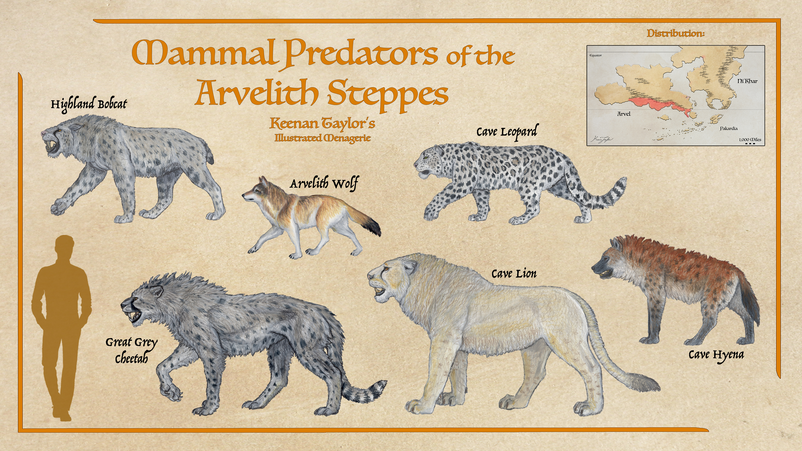
The Arvelith steppes possess one of the most formidable mammalian predator assemblages in the Known World. Stretching across cold grasslands, rolling upland steppes, broken escarpments, wooded valleys, alpine forests, and wind-carved plateaus south of the great mountain barrier, this ecosystem supports an astonishing diversity of carnivores. Unlike the Titan Gardens to the north, where gigantic theropods dominate virtually every trophic level, the highlands represent one of the few regions of Kaimere where mammalian predators achieved their greatest ecological success. Yet the term carnivore community can be misleading. The predators of the southern steppes are not arranged in a simple hierarchy with a single apex hunter sitting atop a pyramid. Rather, they form an extraordinarily complex web of competing specialists, opportunists, scavengers, aerial hunters, omnivorous giants, and migratory superpredators. Lions, hyenas, cheetahs, Homotherium, leopards, wolves, bear sloths, bears, eagles, vultures, and even immense flying pterosaurs all participate in the movement of energy through the ecosystem. Above them all loom the seasonal shadows of titan crows and wandering zentaur megaraptorans, creatures so enormous that they seem almost disconnected from the struggles of ordinary predators. At the lowest level of the carnivore hierarchy are numerous small hunters.
Pouch dholes, striped anteaters, kangaroo rats, rodents, small snakes, predatory lizards, and insectivorous birds consume enormous quantities of invertebrates and small vertebrates. Though individually insignificant compared to lions or hyenas, collectively they account for much of the predatory pressure experienced by smaller animals. Pouch dholes are among the most successful marsupial predators in the region. Most populations remain nocturnal and utilize rocky outcrops, burrows, and dense vegetation to avoid larger carnivores. They feed heavily upon rodents, young rabbits, reptiles, birds, eggs, and carrion. While they occasionally kill surprisingly large prey, they primarily function as opportunistic mesopredators. Kangaroo rats occupy a more omnivorous role. Though often remembered as insectivores, many populations readily consume small vertebrates and eggs when available. They are important predators of ground-nesting birds and frequently raid reptile nests. Striped anteaters remain among the most specialized predators in the ecosystem. Their dependence upon colonial insects largely insulates them from direct competition with other carnivores. They occupy a trophic niche that few mammals exploit extensively. These marsupials survive largely because they fall beneath the notice of larger predators. A lion gains little by chasing a quoll. A hyena rarely bothers pursuing a bandicoot. This creates an ecological refuge where small predators can flourish despite existing alongside some of the largest carnivores in the world. Martens and fishers concentrate in wooded corridors. Weasels and ferrets exploit burrow systems and dense vegetation. Badgers focus heavily on tubers and invertebrates, supplementing their diet with carrion.
The smallest major mammalian carnivore of the open steppes is the Arvelith wolf. Despite its common name, this animal is not truly a wolf in the modern sense. Rather, it represents a jackal-like descendant of ancestral canids that independently evolved into one of the highlands' most successful solitary hunters. The Arvelith wolf occupies a niche largely abandoned by larger social predators. Unlike hyenas, lions, or Homotherium, it avoids large prey entirely. Rabbits, marmots, rodents, birds, juvenile ungulates, reptiles, carrion, and seasonal fruits form the bulk of its diet. Its greatest adaptation is not strength but invisibility. Large predators constantly monitor one another. Each species represents a direct threat. Arvelith wolves largely avoid this attention. Their territories often overlap with every major predator in the ecosystem because they rarely represent meaningful competition. A cave lion may kill an Arvelith wolf on sight, but such encounters are uncommon because the smaller canids actively avoid areas where lions are active. Their excellent hearing and keen awareness of predator movements allow them to slip between larger territories. This behavior illustrates a recurring theme throughout the highland predator community.
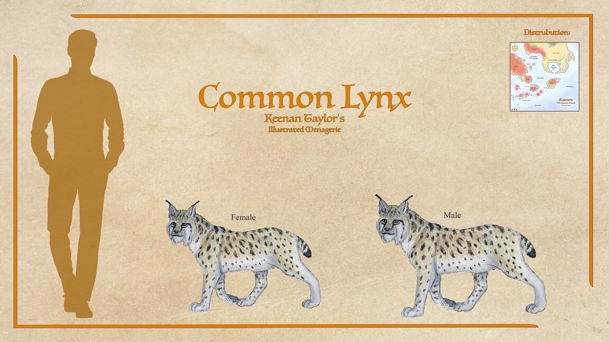
The common lynx occupies another relatively secure niche. Though significantly larger than the bobcats familiar to humans, it remains far smaller than the great predators dominating the steppes. Unlike Homotherium, cave leopards, or lions, lynx are almost entirely solitary. Their prey consists primarily of hares, rabbits, ground birds, young deer, rodents, and similar-sized animals. The species achieves coexistence through habitat partitioning. Most lynx spend far more time along woodland edges, brushlands, and broken terrain than the larger cats. While cave leopards may pass through these habitats, they generally focus on larger prey. Lynx also exhibit temporal partitioning. Activity peaks often occur during crepuscular periods when larger predators are less active. This minimizes encounters. The lynx therefore occupies a relatively stable position in the ecosystem. It is neither dominant nor heavily persecuted.
At the highest trophic level operate three principal regulatory taxa: the zentaur, the titan crow, and the cave hyenas. These organisms occupy partially overlapping but fundamentally distinct ecological domains, each exerting control through different mechanisms.

Zentaur function as episodic superpredators whose influence is disproportionate to their numerical abundance. They are primarily associated with forested margins, steppewood corridors, and river valleys, where vegetation structure, shadow cover, and acoustic clutter facilitate stealth-based ambush hunting. Their reliance on concealment and sensory masking renders them poorly suited to open plains, where scent dispersion and visual exposure compromise their hunting efficiency. As a result, zentaur predation pressure is concentrated along ecological edges, where migratory herds converge and resource density is highest. Their preference for large-bodied prey, including drenduga, beraphaunts, subadult mammoths, giant sloths, and runnendrakes, places them in direct competition only intermittently with mammalian predators. When present, they suppress local predator guilds through intimidation and direct killing, temporarily reorganizing community structure.
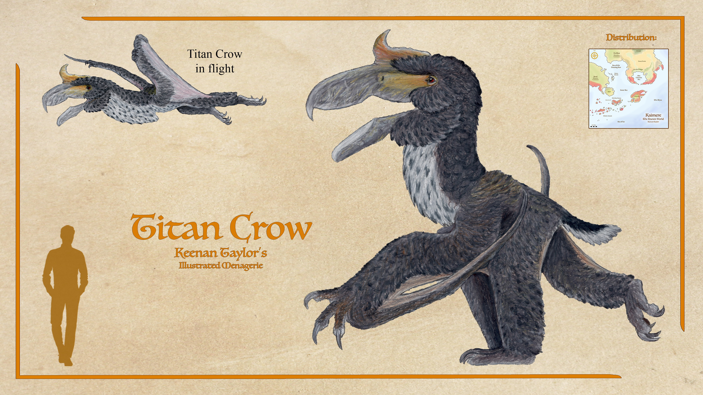
Titan crows represent a fundamentally different apex strategy based on mobility rather than territorial dominance. Their enormous wingspan and seasonal migratory behavior allow them to exploit prey resources across marine, coastal, forest, and steppe environments. During summer incursions into southern Arvel, titan crows concentrate along shorelines, river mouths, and productive valleys, where they prey upon seals, ungulates, and weakened megafauna. Their specialized beak apparatus enables rapid dismemberment and transport of carcass fragments, reducing exposure time on the ground. Unlike terrestrial predators, titan crows are not bound to specific territories and can abandon depleted regions rapidly, preventing overexploitation. Their episodic presence introduces strong seasonal pulses of mortality that restructure prey demographics and redistribute nutrients.
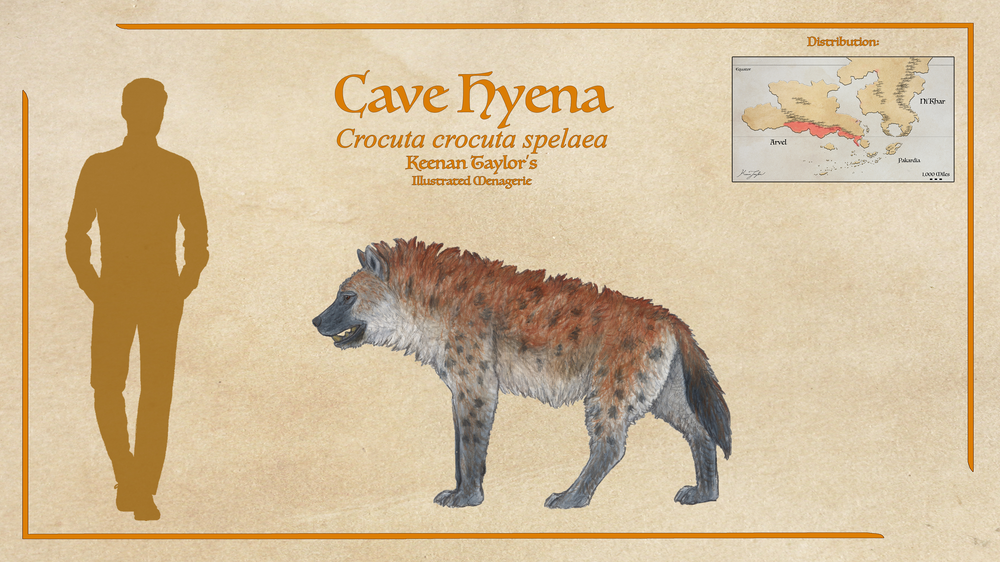
Cave hyenas constitute the most persistent and influential carnivores in the steppe ecosystem and function as its primary ecological keystone. Their dominance derives not from individual strength but from social organization, numerical superiority, and behavioral plasticity. Living in large, hierarchically structured clans, hyenas exploit nearly every available food source, including live prey, carrion, bone marrow, and refuse from human settlements. They hunt cooperatively when conditions permit but are equally capable of solitary foraging. This flexibility allows them to track fluctuating prey distributions and remain active across seasons and habitats. Hyenas exert control over trophic dynamics by regulating carcass access. Through rapid aggregation and coordinated defense, they exclude most competitors from kills, forcing other predators either to hunt independently or to specialize in alternative prey. Their dominance over carrion reduces the profitability of scavenging for larger carnivores and thereby promotes active predation, increasing overall energy throughput. Additionally, hyena patrol routes and territorial scent-marking influence herbivore migration corridors, effectively shaping landscape-level movement patterns.
Below this regulatory tier exists a diverse assemblage of upper mesopredators, including cave lions, the highland bobcats, cave panthers, black bear sloths, and cave bears. These species are broadly similar in body size and energetic requirements but exhibit pronounced ecological differentiation that enables coexistence.
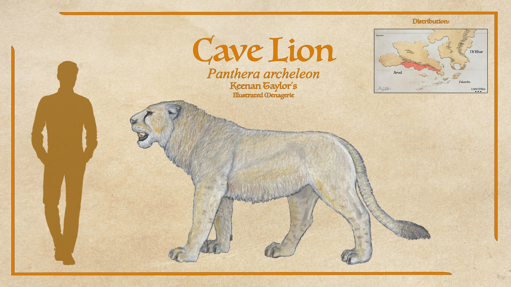
Cave lions occupy open plains and lightly wooded mosaics, relying on visual detection and short-distance pursuit. Their elongated limbs and efficient gait favor wide-ranging patrols and endurance-based hunting. They specialize primarily on medium to large ungulates, particularly caribou, horses, and juvenile megaherbivores. Lions avoid prolonged confrontations with hyenas by targeting prey that can be rapidly dragged into cover, thereby reducing kleptoparasitism.
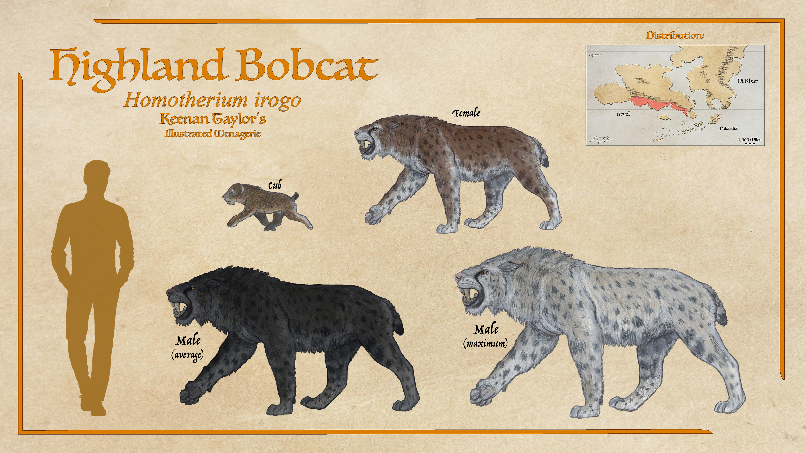
Homotherium, or the highland bobcat, are lords of the day. They can hunt at night, but they much prefer daytime hunting, perhaps in an unspoken partition with the hyenas. Their troops are smaller than hyena clans, but they much more often hunt together. Though they sometimes linger near a kill, hyenas and cave lions do most of their scavenging during the day, so bobcats will usually portion out and retreat with their kills to a defensible den.

The great grey cheetah is found in this habitat, but they seem to be rare. Their preference for hunting at night, which is excellent in the west when this allows them to completely avoid the diurnal-restricted cockatrice, is a disadvantage in this habitat. The night belongs to the hyenas. They can hunt during the day, but scavenging hyenas and lions take their toll. Great grey cheetahs are significantly faster than both, so can reliably flee, but they need to eat a lot more than their gracile kin, and a quick feast is often insufficient. They sometimes have to defend a kill, and this is difficult. It is assumed this is why they are so rare east of the mountain ranges.
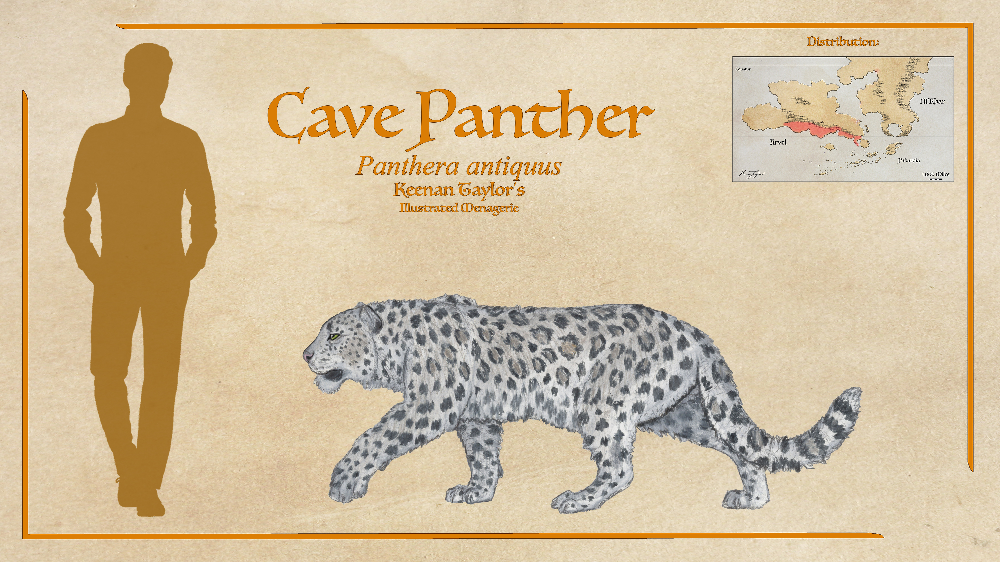
Cave panthers specialize in structurally complex environments, including steppewoods, foothill forests, rocky outcrops, and riparian corridors. Their exceptional climbing ability allows them to cache prey in trees, effectively removing it from hyena competition. This vertical partitioning is central to their persistence. Panthers primarily target medium-sized ungulates, marsupials, and multituberculates, but will opportunistically take larger prey when conditions permit.
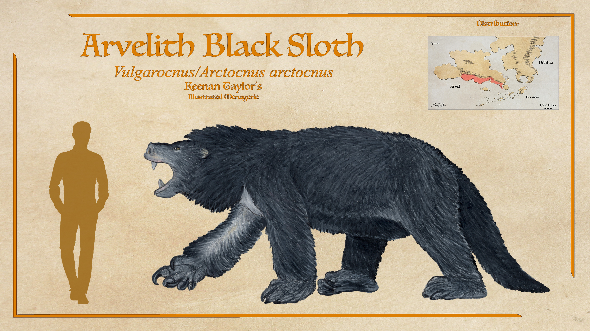
Black sloths occupy a unique position as omnivorous megafaunal competitors rather than obligate predators. Their immense strength, armored integument, and formidable claws allow them to appropriate kills from carnivores and to prey opportunistically on mammals of considerable size. During winter scarcity, they shift toward active predation, targeting weakened ungulates, mesopredators, and even juvenile megaherbivores. Their ability to switch between herbivory, scavenging, and predation buffers them against environmental variability and places them in partial competition with both bears and hyenas.
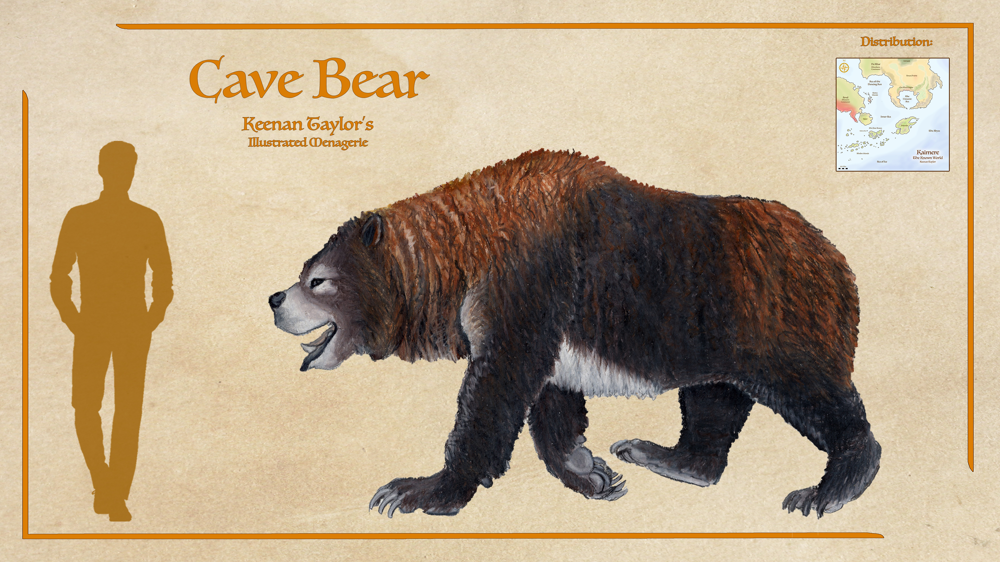
Cave bears function primarily as dominant herbivorous - scavenging competitors. Concentrated in wooded valleys and alpine forests, they subsist largely on vegetation but possess the size and aggression necessary to displace smaller predators from carcasses. Their limited cursorial ability restricts them to localized foraging zones, making them dependent on predictable food sources. Although subordinate to black bear sloths in many regions, bears persist through specialization on forested refugia and seasonal resource pulses. The interactions among black bear sloths, cave bears, and hyenas form a distinctive trophic triangle that stabilizes energy distribution. Black bear sloths suppress bear populations through competitive exclusion in open habitats. Bears persist in forest refugia beyond sloth dominance. Hyenas, through collective aggression and mobility, prevent either from monopolizing carrion. This triadic structure ensures that no single omnivorous competitor dominates the scavenging niche.

The waterways along southern Arvel are home to a Arvelith alligator. Not much is known about them in comparison to the other two gator species in Kaimere. They tend to be a lighter brown rather than the black of Qajarith and Pakardiant gators, but their skeletal anatomy is nearly indistinguishable. Despite this, hybrids are unknown between them and the other two species, suggesting a more ancient ancestry, perhaps going back to the first harvest after the Dynastic Extinction, whereas the Pakardiant species was harvested from the ancestor of modern gators 8 million years ago. They are also generally wary of people, and the locals describe them as game and even companions, a striking contrast to the cultural perception of crocodilians in the warmer half of the known world.
Temporal partitioning further reduces conflict among predators. Large felids and zentaur are most active during crepuscular and nocturnal periods. Hyenas exhibit cathemeral activity, remaining active throughout the day and night. Sloths and bears peak during twilight and nocturnal hours. Small mustelids and rodents exploit narrow temporal windows of reduced predator activity. These staggered activity patterns distribute predation pressure and minimize direct interference. Spatial segregation is reinforced by differential habitat use. Open plains are dominated by lions, hyenas, and wolves. River valleys favor zentaur, leopards, and bears. Foothills support takin-associated predators and sloths. Coastal zones attract titan crows and transient carnivores. Steppewoods function as refugia for arboreal and ambush specialists. This mosaic structure allows multiple large predators to coexist within overlapping ranges. Collectively, these layers of partitioning produce a highly efficient trophic system in which energy is extracted from prey populations through multiple complementary pathways. Direct predation, cooperative hunting, ambush, scavenging, kleptoparasitism, and omnivory all operate simultaneously. No single strategy is sufficient in isolation; success depends on flexibility and contextual specialization. The result is a predator guild of extraordinary resilience. Population fluctuations in any one lineage are rapidly compensated by others, preventing trophic cascades. Herbivore populations are subjected to continuous, multifaceted predation pressure, which favors vigilance, mobility, and social coordination. In turn, these traits reinforce the dominance of large, socially complex mammals.